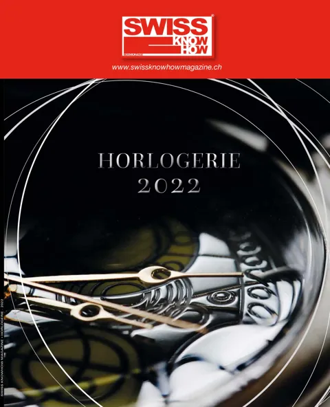

En bref
Le président de la FH Jean-Daniel Pasche juge 2021 positive : la branche a retrouvé plus vite que prévu ses chiffres d’avant-crise grâce à la reprise tirée par la Chine et les États-Unis, avec toutefois une forte polarisation entre le haut de gamme en progression et l’entrée de gamme encore à la peine. Il affiche un optimisme prudent pour 2022, la pandémie et la géopolitique restant des incertitudes, et voit l’e-commerce se renforcer sans remplacer la vente physique. La FH a obtenu en 2021 des exemptions de marquage des montres suisses en Russie et en Inde et l’extension de la convention de poinçonnement avec la France aux montres multimétaux, et a participé à l’accord de libre-échange avec le Royaume-Uni. La lutte anticontrefaçon s’est concentrée sur le Moyen-Orient et les plateformes en ligne, avec plus de 800’000 annonces supprimées. L’emploi horloger reste stable avec 57’500 personnes. Texte bilingue français-anglais.
« Notre produit est émotionnel ; les mauvaises nouvelles, la perte de confiance ou d’autres perturbations influencent les ventes. »— Jean-Daniel Pasche
L'interview intégrale
Elle se bat pour les intérêts de l’horlogerie suisse, améliore sans cesse les conditions cadres, lutte pour endiguer le fléau des contrefaçons et défend le Swiss made. La Fédération de l’industrie horlogère suisse est sur tous les fronts avec des avancées notables en 2021. Nous nous sommes entretenus avec son président, Jean-Daniel Pasche.
Revenons sur l’année 2021. Pourriez-vous nous dresser le bilan des exportations horlogères suisses ?
L’année 2021 a été positive pour l’horlogerie suisse. Comme nous l’imaginions, la branche a bien résisté et nous avons retrouvé plus rapidement que prévu les chiffres d’avant-crise. Ceci grâce à la reprise économique mondiale, tirée par la Chine et les États-Unis.
L’Europe est encore un peu à la traîne. Il y a de bonnes surprises avec des pays qui se portent mieux comme la Russie, la Turquie ou l’Australie. Les exportations horlogères ont donc poursuivi leur redressement. A noter tout de même une importante polarisation en fonction des segments de prix et selon les entreprises. Le haut de gamme continue de progresser mais l’entrée de gamme n’a pas encore retrouvé de bons chiffres. La crise a naturellement accentué ce phénomène.
Quelles sont les perspectives pour 2022 ?
Je dirais que nous affichons un « optimisme prudent ». Nous pensons que cette évolution va se poursuivre en 2022. Il reste toutefois des incertitudes liées à la pandémie telles que les potentielles fermetures de magasins et le tourisme. D’autres sujets sensibles peuvent impacter notre domaine comme la géopolitique et les risques de conflits. Notre produit est émotionnel ; les mauvaises nouvelles, la perte de confiance ou d’autres perturbations dans le quotidien des consommateurs influencent les ventes. Mais à l’inverse, lorsqu’une embellie se profile, les ventes de montres suisses progressent systématiquement.
Qu’en est-il des ventes online ?
Le e-commerce s’est renforcé durant ces deux dernières années. Les marques se sont adaptées en développant leurs infrastructures digitales. Ce domaine va donc continuer de monter en puissance sans suppléer la vente physique. Les entreprises doivent gérer les deux canaux de manière optimale.
Du côté de la FH, quelles sont vos principales batailles actuellement ?
Notre mission consiste à faciliter les exportations en combattant les obstacles. Nous avons fait quelques belles avancées en 2021. Je pense notamment au marché russe. La Russie a introduit un nouveau système de traçabilité des métaux précieux qui demande le marquage d’un code QR sur les produits. Nous avons réussi à obtenir une exemption de marquage sur les montres suisses grâce à une convention de réciprocité sur les métaux précieux.
Les produits poinçonnés en Suisse pourront entrer en Russie. Cette convention a été modifiée, puis le conseiller fédéral Ueli Maurer a signé la révision avec son homologue russe fin 2021. A noter que cela a été possible grâce à d’anciennes négociations entre les deux pays au moment de l’adhésion de la Russie à l’OMC.
Un autre exemple : L’Inde, invoquant la protection des consommateurs, a également introduit en 2021 l’obligation de poinçonner tous les produits en métaux précieux. Avec l’intervention de la Confédération et de la faîtière « All India Federation of Horlogical Industries », la FH s’est mobilisée avec succès pour que les autorités indiennes exemptent les montres de cette nouvelle législation. Toutefois, nous continuons de suivre ce dossier afin que cela soit aussi le cas pour la joaillerie.
Finalement toujours au registre du poinçonnement des produits en métaux précieux, nous avons réalisé une avancée en France avec qui nous avions déjà une convention de réciprocité. Celle-ci a été étendue aux montres multimétaux et ratifiée par l’Assemblée Nationale et le Sénat également en 2021.
Qu’en est-il des conditions cadres avec le Royaume-Uni ?
La Suisse a rapidement proposé de conclure un accord spécifique de libre-échange avec le Royaume-Uni auquel la FH a participé. Nous sommes très satisfaits de cet accord et continuons d’accompagner le processus.
Les contrefaçons font-elles toujours partie de vos priorités ?
Oui, nous avons poursuivi notre activité. En 2021, nous nous sommes concentrés sur le Moyen-Orient en réalisant des centaines de milliers de saisies.
La lutte a été également renforcée sur les plateformes de vente et les réseaux sociaux. Plus de 800'000 annonces de vente ont été supprimées grâce à un nouveau logiciel de détection.
Selon une étude publiée en mars 2021 par l’OCDE, le commerce de contrefaçons coûte très cher à l’économie suisse. Pour l’horlogerie uniquement, cela représente une perte de deux milliards de francs et de près de 4'000 emplois annuellement.
D’autres nouvelles pour l’industrie ?
Une bonne nouvelle saluée par la FH en matière d’importations avec la suppression des droits de douane sur les produits industriels. Les Chambres fédérales l’ont acceptée lors de la session d’automne. Nous notons aussi une encourageante stabilité des emplois dans l’industrie horlogère avec 57'500 employés en 2021. Bienne, 22.12.2021
Texte paru dans Swiss Knowhow – Horlogerie 2022, p. 2-3.
Personnes citées
- Jean-Daniel PaschePrésident de la Fédération de l’industrie horlogère suisse FH

Paru dans
Swiss Knowhow – Horlogerie 2022
2022 · page 02-03 · article original en français
Lire l'article complet PDF